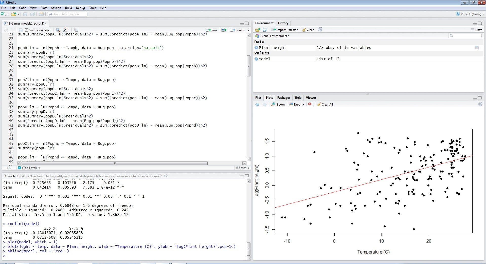

Installing R and R Studio
 We recommend using R Studio as a user friendly interface for using R.
We recommend using R Studio as a user friendly interface for using R.
First, install the latest version of R - download from here Second, install the latest version of R Studio - download from here
Setting the working directory
Once you have installed R and R Studio, you need to set the working directory. This is the location on your computer where any data files to imported can be found, and where any R scripts (the files that save your code) will be saved.
In R studio, you can set the working directory with the menus (Session >> Set Working Directory >> Choose Directory) or with a line of code that gives the path of the folder on your computer:
setwd("Drive:/Folder1/Folder2")If you are working with any of the example data files on this site, you will first need to download them to a folder on your computer and specify that folder as the working directory.
The layout of R Studio

R Studio has four panels:
The top left panel is the editor (or script window) you can view your R script. Running code from here is a simple as Ctrl+Enter when the cursor is on the line or lines of code that you want to execute.
The bottom left panel is the console (or command window) where you can also run lines of code (write code next to > and press Enter), but also where any text or numerical output will appear.
The top right is the workspace window that lists the various R objects that you are currently using. These can be data sets or objects created by various analyses.
The panel on the bottom right has: lists of the files in your working directory the R packages that you are currently using any graphical output in the Plots window help files (accessed by ? preceding any bit of code)
You can change the size of these by dragging the edges of the windows.
Saving your code in a script
You should save all the code you use for a given analysis or graphic. Use the menus in R Studio to create a new R script (File >> New >> R script) and save that with the disk icon or menu (File >> Save). See Good practice for writing scripts for advice on how to structure these files.
Installing R packages
If your required analyses or graphics need a package that is not in the initial installation of R, then new packages can be installed from the menus (Tools >> Install packages) or from the panel on the bottom right. Once installed, they can be loaded with the library function (recommended) or by ticking the little box next to the package name (not recommended). It is better practice to use the library function in your script as that will remind you what packages need to be loaded.
For example, this code will load the package maptools if it is installed on your computer.
library(maptools)Further help
Our help modules on Good practice for writing scripts and Importing data and data cleaning
Author: Alistair Poore
Last updated:
## [1] "Tue Jan 25 09:44:11 2022"